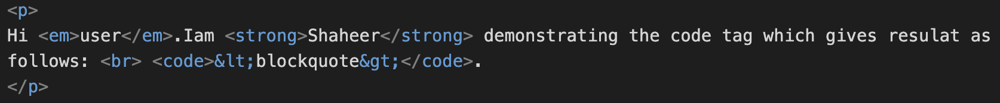

The dl- description list , dt - description term , dd -description defination
soliloquy
In drama, where a character speaks to themselves, representing their inner thoughts or feelings and in the process relaying them to the audience (but not to other characters.)
monologue
In drama, where a character speaks their thoughts out loud to share them with the audience and any other characters present.
aside
In drama, where a character shares a comment only with the audience for humorous or dramatic effect. This is usually a feeling, thought or piece of additional background information
demo of italics and code tag
Hi user.Iam Shaheer demonstrating the code tag which gives resulat as follows: <blockquote>.

demo of blockquote tag
the blockquote is :
Hi user.Iam Shaheer demonstrating the code tag which gives resulat as follows: <blockquote>.
The quote element - <q> is This is the example of the quotation -- MDN link
An <abbr> tag:
I use HTML, Hypertext Markup Language, to write my web pages
I think Rev. Green did it in the kitchen with
the chainsaw.
Misc :
the underline example -ins tag
the strikeout example - del tag and em tag for italics
the subscript example H2O
the mark example
the Reverse